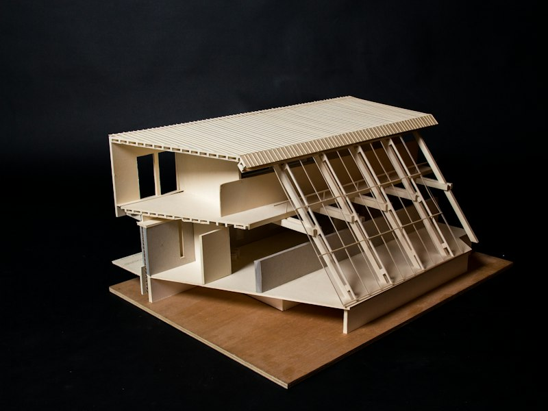
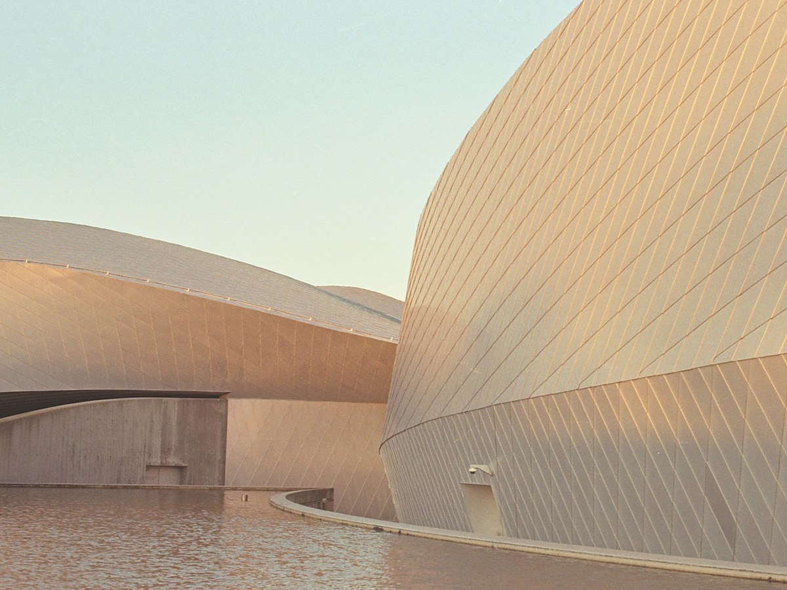
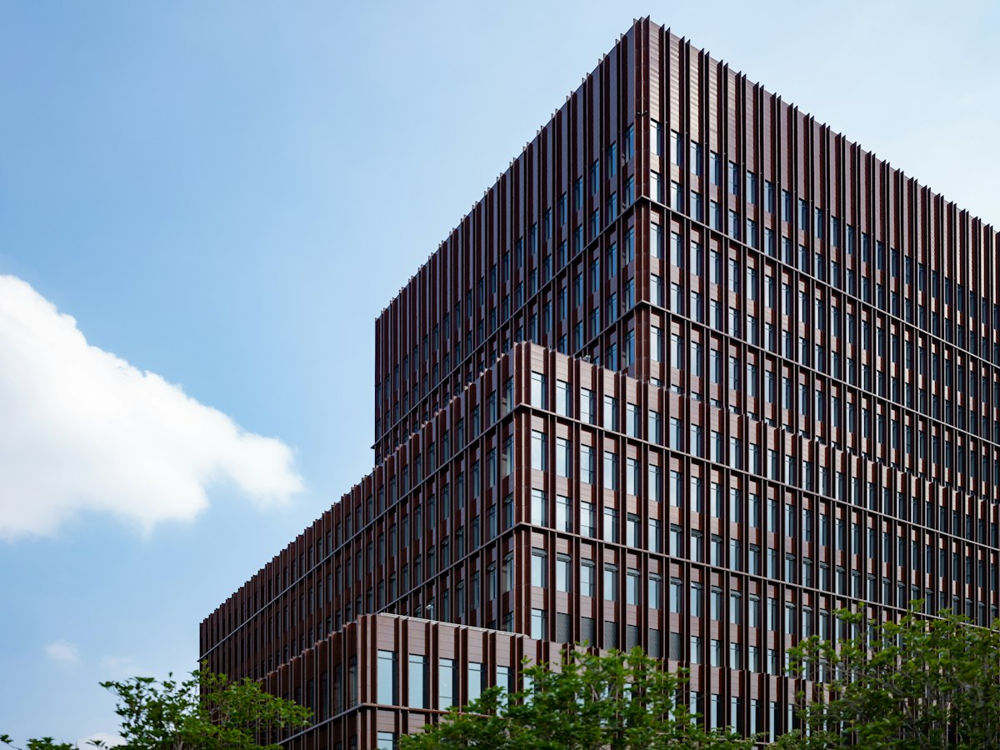
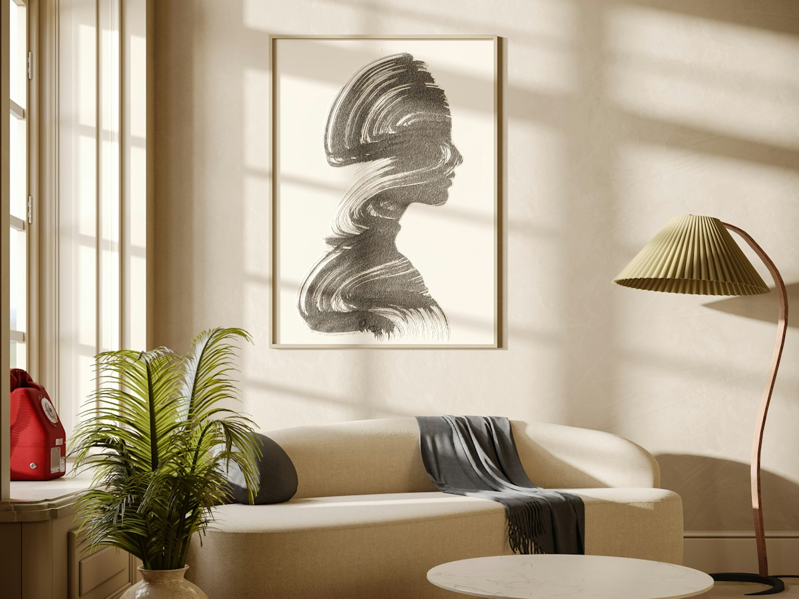
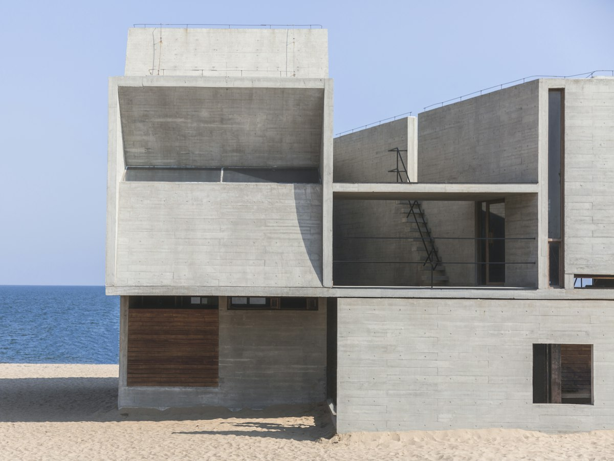
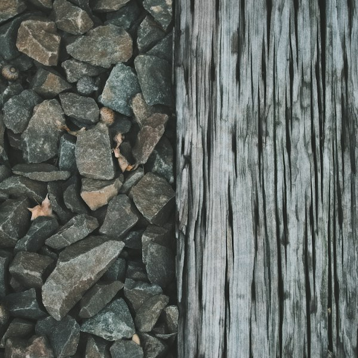
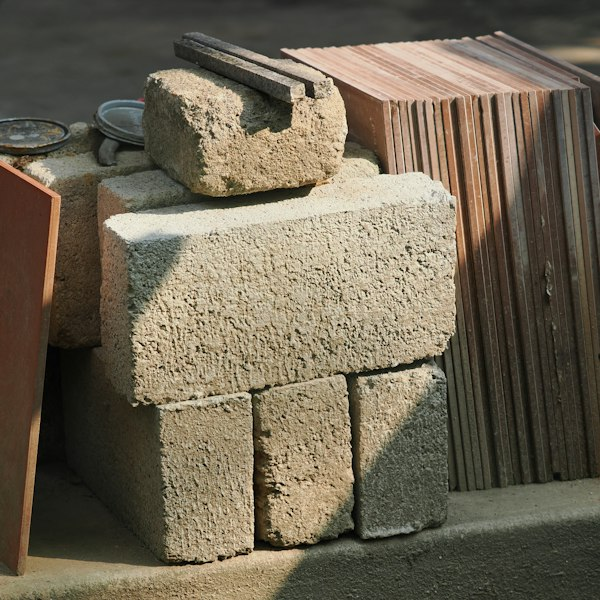
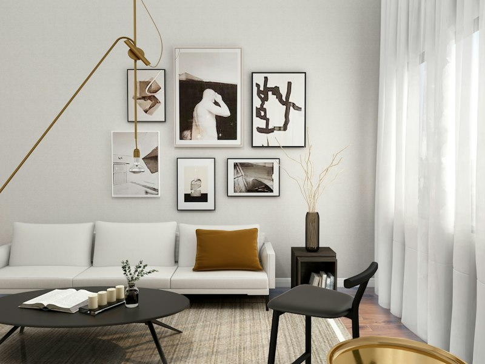
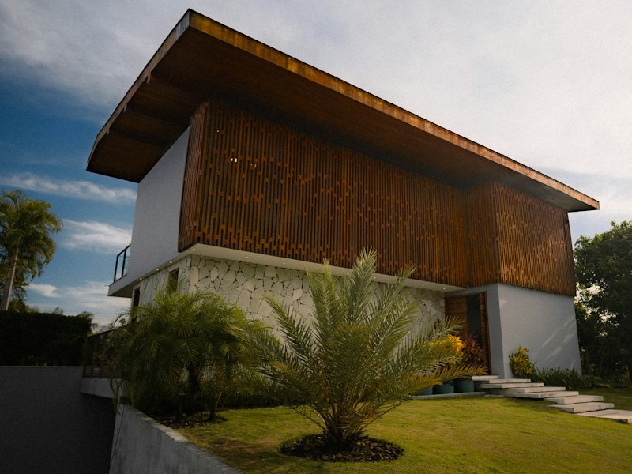

طراحی معماری
از طرح مفهومی و ماکت تا نقشههای اجرایی کامل.
- مطالعات سایت و اقلیم
- طرح مفهومی و ماکت
- اخذ پروانه ساختمان
طراحی بناهای مسکونی، فرهنگی و تجاری با تکیه بر نور طبیعی، اقلیم و مصالح بومی؛ از اولین اسکیس تا تحویل کلید.
ما معتقدیم معماری خوب، زندگی را آرامتر میکند. هر پروژه گفتگویی است میان نور، مصالح، اقلیم و آدمهایی که قرار است سالها در آن زندگی کنند.
دانشآموخته کارشناسی ارشد معماری از دانشگاه تهران و دانشگاه پلیتکنیک میلان. پیش از تأسیس استودیو در سال ۱۳۹۴، در دفاتر معماری ایتالیا و آلمان کار کرده است.
در استودیو آرین، هر طرح از مطالعه زمین شروع میشود: جهت آفتاب، باد غالب، دید و درختانی که باید بمانند. نتیجه، بناهایی است که کمتر انرژی مصرف میکنند و با گذر زمان زیباتر میشوند.
 مسکونی · کلاردشتویلای سایه۱۴۰۴
مسکونی · کلاردشتویلای سایه۱۴۰۴

فرهنگی · بندر انزلیمرکز فرهنگی آبی۱۴۰۲ مسکونی · یزدخانه حیاط۱۴۰۳
مسکونی · یزدخانه حیاط۱۴۰۳

تجاری · شیرازبرج اداری روشنا۱۴۰۲
داخلی · تهرانپنتهاوس الهیه۱۴۰۴ فرهنگی · اصفهانکتابخانه باغ۱۴۰۱
فرهنگی · اصفهانکتابخانه باغ۱۴۰۱

مسکونی · رامسرویلای ساحلی نیلو۱۴۰۰ تجاری · تبریزمجتمع تجاری آسمان۱۳۹۹
تجاری · تبریزمجتمع تجاری آسمان۱۳۹۹
 نور، اولین مصالح ماست.
نور، اولین مصالح ماست.جهتگیری بنا، ارتفاع پنجرهها و عمق سایهبانها را با مطالعه مسیر خورشید در تمام فصلها تعیین میکنیم.
تهویه طبیعی، عایقکاری دقیق و جرم حرارتی بنا، مصرف انرژی را تا ۴۰ درصد کمتر از ساختمانهای معمول نگه میدارد.
آجر، سنگ و چوب منطقه را ترجیح میدهیم؛ هم با اقلیم سازگارترند و هم با گذر زمان زیباتر میشوند.
قبل از کشیدن اولین خط، روزمره خانواده یا سازمان را میشناسیم تا فضا دقیقاً برای همان زندگی ساخته شود.




همراهی کامل، از ایده تا تحویل کلید.

از طرح مفهومی و ماکت تا نقشههای اجرایی کامل.

طراحی فضاهای داخلی گرم، کاربردی و ماندگار.

ساختمانهایی با مصرف انرژی کمتر و آسایش بیشتر.

حضور منظم در کارگاه تا اجرای دقیق طرح.
یک پروژه مسکونی متوسط از اولین جلسه تا شروع اجرا حدود شش ماه زمان میبرد. در هر مرحله، طرح را با ماکت و تصویر سهبعدی با شما مرور میکنیم.

شناخت نیازها، بودجه و ویژگیهای زمین.
۲ هفتهاسکیس، ماکت مطالعاتی و تصاویر سهبعدی.
۶ هفتهنقشههای معماری، سازه و تأسیسات.
۸ هفتهاخذ مجوزها و انتخاب پیمانکار مناسب.
۶ هفتهنظارت عالیه تا بهرهبرداری کامل.
۱۲ تا ۲۴ ماههجده معمار، طراح داخلی و مهندس در دفتر تهران.


«آرین و تیمش خانهای برای ما ساختند که هر روز صبح با نورش بیدار میشویم. جزئیاتی که فکرش را هم نمیکردیم، حالا بهترین قسمت زندگی ما شده است.»
خانواده توکلیکارفرمای خانه حیاط، یزد
درباره زمین، نیازها و رویای خود بنویسید. اولین جلسه آشنایی در دفتر استودیو رایگان است.

رنگ و حالت نمایش را امتحان کنید.
رنگ اصلی حالت نمایش